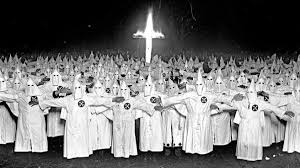
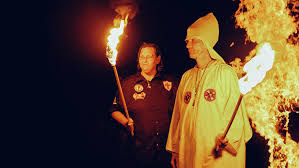

En esta plataforma, promovemos la conciencia, la educación y la acción para erradicar el racismo en todas sus formas. Descubre recursos, testimonios y herramientas para convertirte en un aliado activo en la lucha por la igualdad y el respeto. Juntos podemos construir una sociedad inclusiva, donde todos sean tratados con dignidad y justicia.
Este vídeo es una master class de como tratar a un racista si tienes la oportunidad de interactuar con uno.
¿Quién es el KKK?
 El Ku Klux Klan (KKK) es un grupo supremacista blanco fundado en 1865 en Estados Unidos. A lo largo de la historia, ha promovido ideologías racistas, antisemitas y xenófobas, utilizando la violencia, el terrorismo y la intimidación contra afroamericanos, inmigrantes y otros grupos. Conocidos por sus distintivas túnicas blancas y capuchas, el KKK ha sido responsable de numerosos actos de odio, linchamientos y ataques contra comunidades minoritarias. Aunque su influencia ha disminuido, sigue siendo un símbolo del odio racial en Estados Unidos.
Conéctate con nosotros en las plataformas más populares y unete a la lucha contra el racismo